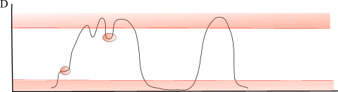

dGap compression of inverted lists
Anatoliy Kuznetsov. 2002-2008.
Introduction
In many cases, bit blocks will frequently have a non-random bit distribution pattern. Here's an example:
0001000111001111Patterns such as these can be represented in different ways. One of the most popular is a list of integers, each representing 1 bits. For example
{ 3, 7, 8, 9, 12, 13, 14, 15, 16 }
This is a list of indexes of bits stored as an ascending sequence of integers.
Another common way of representing ascending sequences is by using the method of D-GAP (delta-gap), the differences between elements of the list. This variant of prefix sum, differential compression was used by BitMagic.
What is Delta Gap Compression?
In D-Gap compression, the very first integer in the sequence is always 1 or 0, and it works as a flag indicating the start bit. In the example above the first bit is 0. The integers following the flag are the lengths of the consecutive blocks of equal bits. The sum of all elements of the sequence without the starting flag value will give us the total length of the block. Essentially this coding model can be treated as a specialized variant of Run Length Encoding (RLE). The D-Gap form of the previous example is:
{[0], 3, 1, 3, 3, 2, 4}
This translates to "Three zeroes, one 'one', three zeros, three ones, two zeroes, and four ones", or
000 1 000 111 00 1111
What are the advantages of this method?
One of the advantages of the D-Gap method is that we can implement all logical operations without decompression of the block.
For example, let's take the logical operation NOT. This is the simplest case, when we need just to change the leading flag to opposite value. All values depend on the initial value, and do not require any additional intervention. It means we have a very efficient, lighting fast inversion.
The implementation of logical AND is more tricky and involves more manipulations with integers. The algorithm iteratively streams through two sequences combining integers from both lists and comparing lengths of the gaps. As a result, we have a new D-Gap coded block of different length. Performance of this method greatly varies on different data. If the D-Gaps are large and the blocks have a clear gap structure, the algorithm can demonstrate spectacular results. It can be even faster than iteration and combination of all words in a non-compressed block.
Logical OR operations are implemented as a set of equivalent NOT AND operations. In other words,
(X or Y)is the same as
(not(not(X) && not(Y))Our implementation of the NOT operation is very fast, which results in almost zero overhead.
What are the disadvantages?
The disadvantage of this method is that finding the value of a random bit always forces us to reiterate the whole sequence. On average we need to iterate half of the block to access the bit we need. When using a plain bit vector we always can pinpoint the bit using bitwise shifts, which is the simplest and fastest method.
For stream-like operations, such as choosing consecutive bits, this is not an issue, since we always can remember our current position in the vector.
Setting and cleaning bits can also be an issue. For instance, we may need to increment or decrement one or two integers, but if the changed bit lies on the gap border, we may have to split the current platform. This means we'd need to move the block of memory before continuing. This can be a problem for an application actively modifying bits.
However, the BitMagic library can be adapted to handle this case. If the D-Gap compression mode is inefficient, it can be switched-off. The software will continue to work as a plain bit vector without a performance penalty. If the application doesn't need a lot of random access operations, we can optimize the bit vectors by converting some of the bit blocks to D-Gap blocks.
Optimized D-Gap coding
As we now see the major disadvantage of the method is that we need to reiterate the sequence to find the bit value. It means that beat access time is proportional to number of elements, ie it is O(N). I f N is small we are safe, but when it grows the price of coding tend to become high.
Lets review our example:
{[0], 3, 1, 3, 3, 2, 4}
Isn't it the same as:
{[0], 2, 3, 6, 9, 11, 15}
What have we done? Just an equivalent transformation of our initial sequence into a new sequence which aggregates
all lengths Gap blocks from left to right (prefix sum encoding). Every next GAP has been encoded in the form of the next border coordinate.
Our formula: GAP(N) = GAP(N-1) + Length(GAP(N)).
BitMagic uses prefix sum encoded sequences when bit-vector sits in memory and delta/differential coded when serialized. As we illustrated here, delta and prefix sum representations are perfectly equivalent and transfomation is computationally cheap. Delta form offers smaller footprint, prefix sum offers log(N) search.
The most important implication is that our sequence is ordered now and we can abandone linear search in favor of far more efficient binary search. Binary search will give us O(log(N)) estimated bit access time, where N is actual array length (cannot be more than fixed GAP block length).
Is it worth it?
You bet! However, overall performance of the D-Gap method does depend on the data we're trying to compress.

Fig. 1
The diagram illustrates a hypothetic distrubution of bits along the bitvector. In the areas where bits desity grows above certain limit D-Gap representation becomes applicable. The same thing happens when our vector becomes sparse. And sometimes some areas in between can expose non-random platform structure and become the subject of compression.
To use this method effectively, D-Gap coded blocks need to be short enough to avoid performance degradation. As a result of setting and cleaning random bits, the blocks will eventually get fragmented and the sequence effectively becomes longer. Therefore, after reaching a certain threshold we should not keep the block as D-Gap. The BitMagic library detects this case and automatically converts the block into a plain bit block.
Measure of complexity
Typical cycle of bit-vector operations is when vector gets some content via logical operations, getting and setting bits and eventually optimized (bm::bvector<>::optimize()). Optimization needs to identify if particular bit-block can be converted into a more compact GAP form. To do that we need to evaluate complexity of a block. Our complexity measure is number of times bit-stream got flipped from 0 to 1 and back to 0. In terms of electrical signals the analogy would be number of electrical impulses per block. If number of impulses is sufficiently low, it is possible to compress a block and save memory.
In the example below we provide a simple implementation of a complexity measure for an unsigned int.
/*!
Function calculates number of times when bit value changed
(1-0 or 0-1).
For 001 result is 2
010 - 3
011 - 2
111 - 1
@ingroup bitfunc
*/
inline
bm::id_t bit_count_change(bm::word_t w)
{
unsigned count = 1;
w ^= (w >> 1);
count += bm::word_bitcount(w); // populatin count
count -= (w >> ((sizeof(w) * 8) - 1));
return count;
}
As you can see the implemtation relies on bit-shift, xor and population counting. For large number of words the algorithms is both memory and computationally intensive. BitMagic implements HW accelerated versions for SSE4.2 and AVX2.
SSE4.2 implementation
SSE4.2 version is relatively straightforward (as SIMD code can be), relies on 128-bit instructions, insert/extract and HW POPCNT.
/*!
SSE4.2 calculate number of bit changes from 0 to 1
@ingroup SSE4
*/
inline
unsigned sse42_bit_block_calc_change(const __m128i* BMRESTRICT block)
{
const __m128i* block_end =
( __m128i*)((bm::word_t*)(block) + bm::set_block_size);
__m128i m1COshft, m2COshft;
unsigned w0 = *((bm::word_t*)(block));
unsigned count = 1;
unsigned co2, co1 = 0;
for (;block < block_end; block += 2)
{
__m128i m1A = _mm_load_si128(block);
__m128i m2A = _mm_load_si128(block+1);
__m128i m1CO = _mm_srli_epi32(m1A, 31);
__m128i m2CO = _mm_srli_epi32(m2A, 31);
co2 = _mm_extract_epi32(m1CO, 3);
__m128i m1As = _mm_slli_epi32(m1A, 1); // (block[i] << 1u)
__m128i m2As = _mm_slli_epi32(m2A, 1);
m1COshft = _mm_slli_si128 (m1CO, 4); // byte shift left by 1 int32
m1COshft = _mm_insert_epi32 (m1COshft, co1, 0);
co1 = co2;
co2 = _mm_extract_epi32(m2CO, 3);
m2COshft = _mm_slli_si128 (m2CO, 4);
m2COshft = _mm_insert_epi32 (m2COshft, co1, 0);
m1As = _mm_or_si128(m1As, m1COshft); // block[i] |= co_flag
m2As = _mm_or_si128(m2As, m2COshft);
co1 = co2;
// we now have two shifted SSE4 regs with carry-over
m1A = _mm_xor_si128(m1A, m1As); // w ^= (w >> 1);
m2A = _mm_xor_si128(m2A, m2As);
bm::id64_t m0 = _mm_extract_epi64(m1A, 0);
bm::id64_t m1 = _mm_extract_epi64(m1A, 1);
count += _mm_popcnt_u64(m0) + _mm_popcnt_u64(m1);
m0 = _mm_extract_epi64(m2A, 0);
m1 = _mm_extract_epi64(m2A, 1);
count += _mm_popcnt_u64(m0) + _mm_popcnt_u64(m1);
}
count -= (w0 & 1u); // correct initial carry-in error
return count;
}
AVX2 implementation
AVX2 implementation uses a different algorithm, which benefits from parallel population count.
The algorithm was published at GitHub https://github.com/kimwalisch/libpopcnt/ by Kim Walisch and Wojciech Muła. BitMagic library adopted and slightly modified the original algorithms.
#define BM_CSA256(h, l, a, b, c) \
{ \
__m256i u = _mm256_xor_si256(a, b); \
h = _mm256_or_si256(_mm256_and_si256(a, b), _mm256_and_si256(u, c)); \
l = _mm256_xor_si256(u, c); \
}
#define BM_AVX2_BIT_COUNT(ret, v) \
{ \
__m256i lo = _mm256_and_si256(v, low_mask); \
__m256i hi = _mm256_and_si256(_mm256_srli_epi16(v, 4), low_mask); \
__m256i cnt1 = _mm256_shuffle_epi8(lookup1, lo); \
__m256i cnt2 = _mm256_shuffle_epi8(lookup2, hi); \
ret = _mm256_sad_epu8(cnt1, cnt2); \
}
#define BM_AVX2_DECL_LOOKUP1 \
__m256i lookup1 = _mm256_setr_epi8(4, 5, 5, 6, 5, 6, 6, 7, 5, 6, 6, 7, 6, 7, 7, 8, \
4, 5, 5, 6, 5, 6, 6, 7, 5, 6, 6, 7, 6, 7, 7, 8);
#define BM_AVX2_DECL_LOOKUP2 \
__m256i lookup2 = _mm256_setr_epi8(4, 3, 3, 2, 3, 2, 2, 1, 3, 2, 2, 1, 2, 1, 1, 0, \
4, 3, 3, 2, 3, 2, 2, 1, 3, 2, 2, 1, 2, 1, 1, 0);
#define BM_AVX2_POPCNT_PROLOG \
BM_AVX2_DECL_LOOKUP1 \
BM_AVX2_DECL_LOOKUP2 \
__m256i low_mask = _mm256_set1_epi8(0x0f); \
__m256i bc;
inline
unsigned avx2_bit_block_calc_change(const __m256i* BMRESTRICT block)
{
BM_AVX2_POPCNT_PROLOG;
const __m256i* block_end =
(const __m256i*)((bm::word_t*)(block) + bm::set_block_size);
__m256i m1COshft, m2COshft;
__m256i mCOidx = _mm256_set_epi32(6, 5, 4, 3, 2, 1, 0, 0);
__m256i cntAcc = _mm256_setzero_si256();
unsigned w0 = *((bm::word_t*)(block));
unsigned count = 1;
bm::id64_t BM_ALIGN32 cnt_v[4] BM_ALIGN32ATTR;
unsigned co2, co1 = 0;
for (;block < block_end; block+=2)
{
__m256i m1A = _mm256_load_si256(block);
__m256i m2A = _mm256_load_si256(block+1);
__m256i m1CO = _mm256_srli_epi32(m1A, 31);
__m256i m2CO = _mm256_srli_epi32(m2A, 31);
co2 = _mm256_extract_epi32(m1CO, 7);
__m256i m1As = _mm256_slli_epi32(m1A, 1); // (block[i] << 1u)
__m256i m2As = _mm256_slli_epi32(m2A, 1);
// shift CO flags using +1 permute indexes, add CO to v[0]
m1COshft = _mm256_permutevar8x32_epi32(m1CO, mCOidx);
m1COshft = _mm256_insert_epi32(m1COshft, co1, 0); // v[0] = co_flag
co1 = co2;
co2 = _mm256_extract_epi32(m2CO, 7);
m2COshft = _mm256_permutevar8x32_epi32(m2CO, mCOidx);
m2COshft = _mm256_insert_epi32(m2COshft, co1, 0);
m1As = _mm256_or_si256(m1As, m1COshft); // block[i] |= co_flag
m2As = _mm256_or_si256(m2As, m2COshft);
co1 = co2;
// we now have two shifted AVX2 regs with carry-over
m1A = _mm256_xor_si256(m1A, m1As); // w ^= (w >> 1);
m2A = _mm256_xor_si256(m2A, m2As);
{
BM_AVX2_BIT_COUNT(bc, m1A)
cntAcc = _mm256_add_epi64(cntAcc, bc);
BM_AVX2_BIT_COUNT(bc, m2A)
cntAcc = _mm256_add_epi64(cntAcc, bc);
}
} // for
// horizontal count sum
_mm256_store_si256 ((__m256i*)cnt_v, cntAcc);
count += (unsigned)(cnt_v[0] + cnt_v[1] + cnt_v[2] + cnt_v[3]);
count -= (w0 & 1u); // correct initial carry-in error
return count;
}
SIMD implementations provide substantial speed up, over generic C code in this case.
Hybrid binary search with SIMD.
Another good use for SIMD code is actually acceleration of binary search. Prefix sum arrays are ascending sorted. log(N) binary search has a known disadvantage - it looses to linear search on small arrays. This is happening due to superscalar nature of modern CPUs and certain properties of memory archtecture and CPU cache, which favor linear memory access. This makes possible to improve binary search using SIMD implementation. The algorithm just need to use binary search to narrow it down and then switch to direct (and parallel) scan using SIMD instructions. The code below uses AVX2/BMI command set.
BitMagic library uses bit-blocks sized at 64K-bit, so GAP prefix sums fit into 16-bit unsigned short.
/**
hybrid binary search, starts as binary, then switches to scan
NOTE: AVX code uses _mm256_subs_epu16 - saturated substraction
which gives 0 if A-B=0 if A < B (not negative a value).
@ingroup AVX2
*/
inline
unsigned avx2_gap_test(const unsigned short* buf, unsigned pos)
{
const unsigned linear_cutoff = 48;
const unsigned unroll_factor = 16;
BM_ASSERT(pos < bm::gap_max_bits);
unsigned res;
unsigned start = 1;
unsigned end = 1 + ((*buf) >> 3);
unsigned arr_end = end;
if (end - start < unroll_factor) // too small for a full AVX stride
{
for (; start < end; ++start)
{
if (buf[start] >= pos)
{
res = ((*buf) & 1) ^ ((--start) & 1);
return res;
}
} // for
BM_ASSERT(0);
}
while (start != end)
{
unsigned dsize = end - start;
if (dsize < linear_cutoff)
{
// set wider scan window to possibly over-read the range,
// but stay within allocated block memory
//
dsize = arr_end - start;
__m256i mZ = _mm256_setzero_si256();
__m256i mPos = _mm256_set1_epi16(pos);
__m256i vect16, mSub, mge_mask;
unsigned len_unr = start + (dsize - (dsize % unroll_factor));
for (; start < len_unr; start += unroll_factor)
{
vect16 = _mm256_loadu_si256((__m256i*)(&buf[start])); // 16x u16s
mSub = _mm256_subs_epu16(mPos, vect16);
mge_mask = _mm256_cmpeq_epi16(mSub, mZ);
int mask = _mm256_movemask_epi8(mge_mask);
if (mask)
{
int lz = _tzcnt_u32(mask) / 2;
start += lz;
res = ((*buf) & 1) ^ ((--start) & 1);
return res;
}
} // for k
unsigned tail = unroll_factor - (end - start);
if (start > tail+1)
{
start -= tail; // rewind back, but stay within block
vect16 = _mm256_loadu_si256((__m256i*)(&buf[start])); // 16x u16s
mSub = _mm256_subs_epu16(mPos, vect16);
mge_mask = _mm256_cmpeq_epi16(mSub, mZ);
int mask = _mm256_movemask_epi8(mge_mask);
BM_ASSERT(mask);
if (mask)
{
int lz = _tzcnt_u32(mask) / 2;
start += lz;
res = ((*buf) & 1) ^ ((--start) & 1);
return res;
}
start += unroll_factor; // remove with if when sure
}
for (; start < end; ++start)
{
if (buf[start] >= pos)
break;
}
break;
}
unsigned curr = (start + end) >> 1;
if (buf[curr] < pos)
start = curr + 1;
else
end = curr;
} // while
res = ((*buf) & 1) ^ ((--start) & 1);
return res;
}
SIMD unpack GAP to bitset
It should be possible to write an efficient implementation for prefix-sum unpack back to bit-block. Implementation is pending on the TODO list. Such algorithm would be very useful and impactful for logical operations where compressed GAP block meets a plain uncompressed bit-block a case where lowest common denominator is a bit-block and where we need to unpack quickly.
Pairwise XOR complexity measure
Another oppotunity for compression is to use the described complexity measure for XOR compression. Logical XOR has a very useful property: repeated it restores content. Sometimes XOR of two blocks results in reduction of complexity (at almost no cost).
It should be noted, that pairwise similarity distances like Hamming do not provide a good measure of final complexity. Quick example: take two bit strings '01010' and '10101' (note a "phase shift" in the bit-sequence), XOR them to get '11111'. Hamming distance (which is POPCNT of XOR) gives us 5 (highly dissimilar) while the complexity measure or our XOR product would be 1 which is very useful, we can see here our block turns from complex to simple.
The described property has potential use in compression of bit-matrixes, where complexity measure similaritis can be found and used.